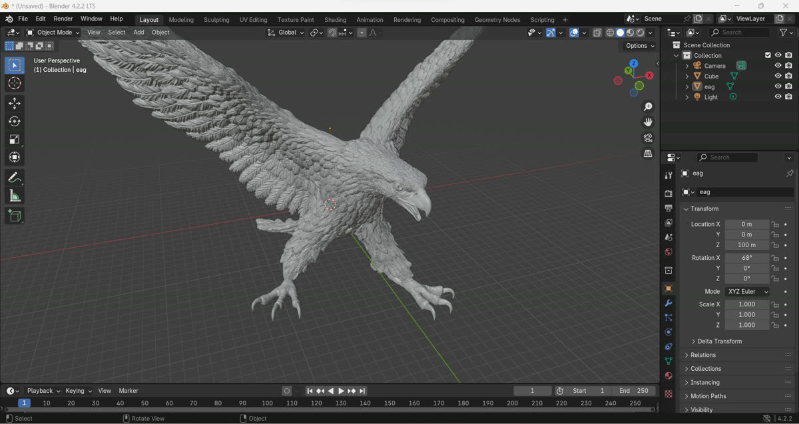
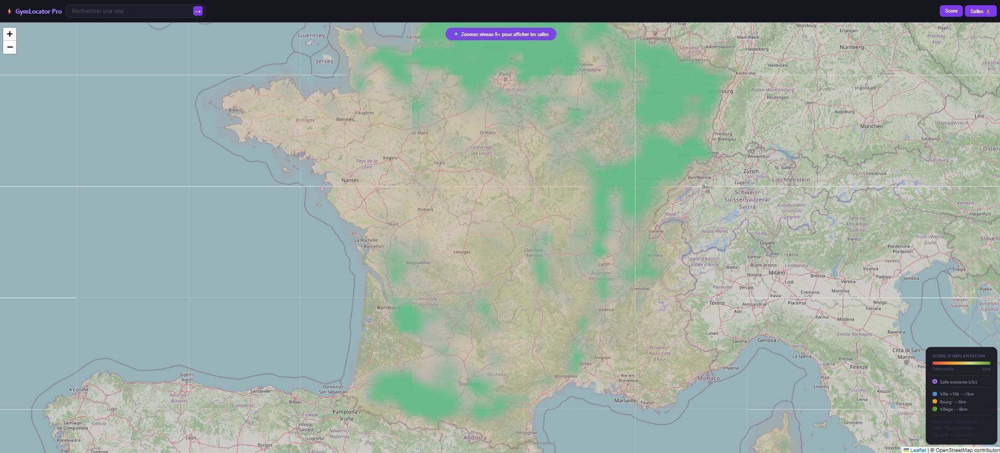
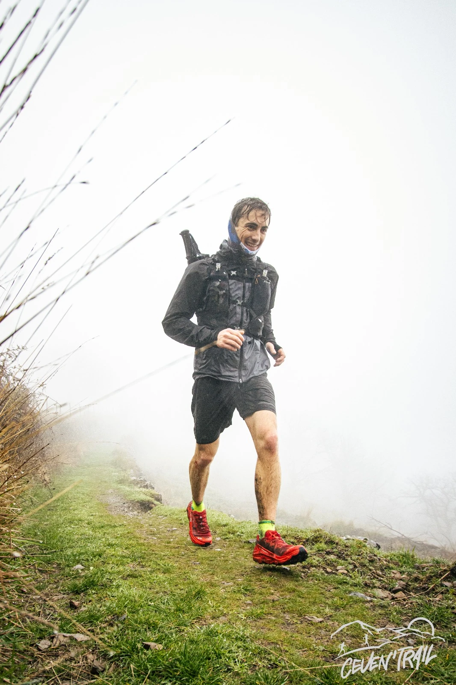
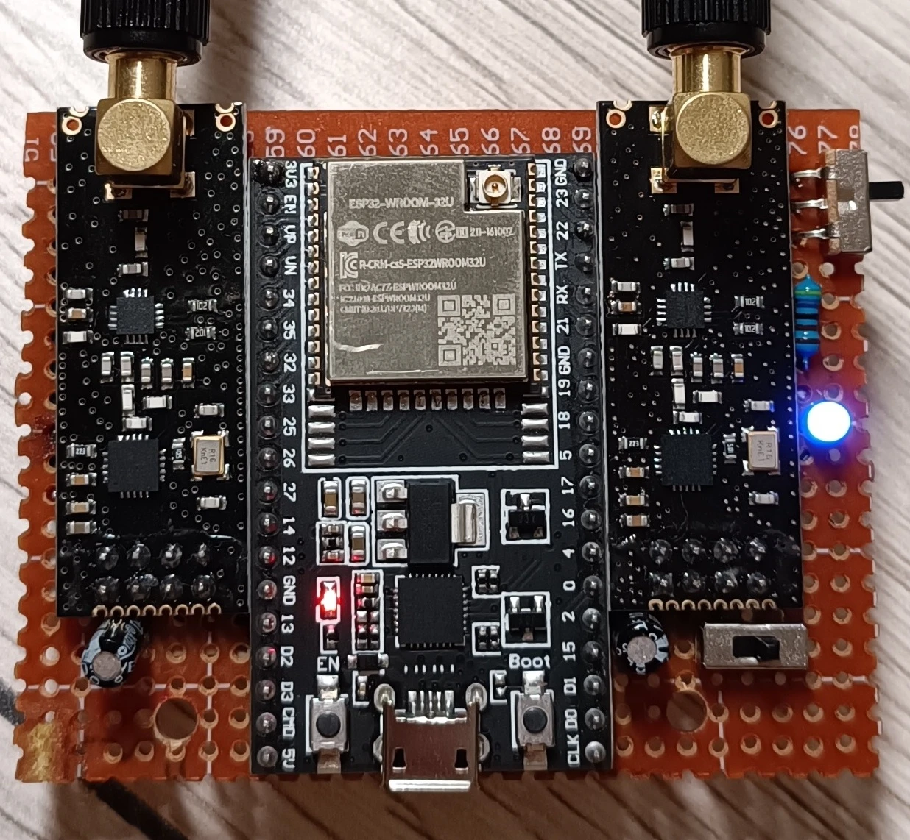
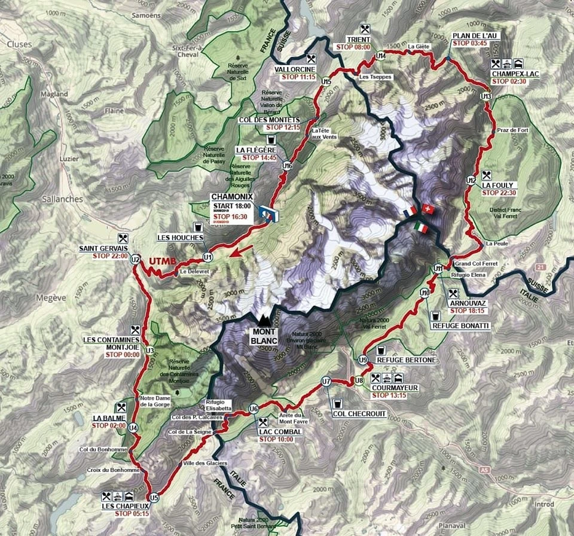
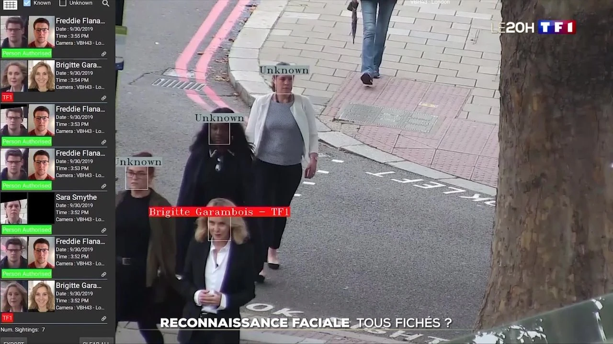

Étudiant en 2ème année à l'École Nationale Supérieure des Arts et Métiers d'Aix-en-Provence, je suis passionné par les défis techniques et humains. Déterminé, volontaire et toujours prêt à me dépasser, je suis à la recherche d'un stage en ingénierie pour mettre mes compétences en pratique dans un environnement exigeant.
Issu d'une classe préparatoire PT au Lycée Mermoz de Montpellier, j'ai développé une rigueur scientifique solide en mécanique, simulation numérique et conception assistée par ordinateur. Ma formation m'a appris à résoudre des problèmes complexes avec méthode et créativité.
En dehors des études, je consacre mon temps aux sports d'endurance et de montagne — ultra trail (+100 km), alpinisme, escalade (7B) — une discipline qui forge le mental et le goût de l'effort. Je suis titulaire du permis B et A.
- Formation d'ingénieur généraliste avec spécialisation en mécanique et procédés de fabrication
- Simulation numérique (Abaqus), conception 3D (CATIA V5, 3D Expérience), programmation Python
- Mathématiques, physique, sciences de l'ingénieur — formation intensive sur 3 ans
- Acquisition d'une rigueur analytique et d'une capacité à travailler sous pression
- Participation au lancement complet d'une salle de sport de A à Z
- Gestion de projets de grande envergure et coordination des équipes
- Community manager : création et animation des réseaux sociaux
- Travaux d'aménagement et logistique
- Réparation et maintenance de vélos
- Accueil et conseil clients
- Divers travaux manuels et logistique
- Récolte des raisins lors des vendanges
- Travail d'équipe, endurance et sens de l'effort







En cours
En cours